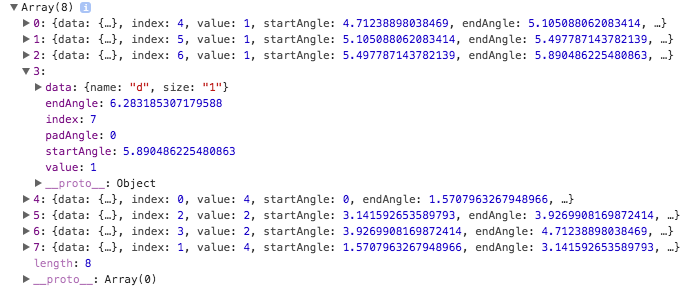

Chapter 05Arcs and Pie Charts
In this section we’ll discuss how to compute data for circular and annular paths and how to use that data to draw pie charts. D3 provides the following methods for computing the generators that we need.
In each of the following examples, we’ll use a 200px by 200px svg element as defined below.
<svg id="demo1" width="200" height="200"></svg>
In each, we’ll dynamically center a g element within the svg element using code similar to the code shown below.
d3.select("#demo1")
.append("g")
.attr("transform", "translate(100,100)");
It is in these g elements that we’ll render our shapes.
Arcs
Recall from the tutorial on Paths that the path element can be used to create lines, polylines, polygons, arcs, circles, ellipses, and other more complex shapes. Recall also that the d attribute defines the shape of the path.
d3.arc() returns a generator that when called automatically generates and returns a string of characters that can be assigned to the d attribute of a path element to define an arc, circle, or annulus. To create an arc generator simply call d3.arc().
var arcGen = d3.arc();
The d3.arc() method returns a function object that we’ll refer to as the arc generator. There are a number of methods that we can call on the arc generator object:
In the example below we set the start and ending angle. Angles are specified in radians where 0 radians is at 12 o’clock and positive radians trace a path clockwise. We also specify an inner and outer radius.
var arcGen = d3.arc()
.innerRadius(0)
.outerRadius(90)
.startAngle(Math.PI/4)
.endAngle(3*Math.PI/4);
The arc generator returns the string that is assigned to the d attribute of the path element. To render the arc (in this case a quarter of a circle) we append a path element to the g element and set its d attribute equal to the string returned by arcGen.
d3.select("#demo1 g")
.append("path")
.attr("d", arcGen)
.attr("fill", "pink")
.attr("stroke", "gray")
.attr("stroke-width", 1);
<script> d3.select("#demo1") .append("g") .attr("transform", "translate(100,100)"); var arcGen = d3.arc() .innerRadius(0) .outerRadius(90) .startAngle(Math.PI/4) .endAngle(3*Math.PI/4); d3.select("#demo1 g") .append("path") .attr("d", arcGen) .attr("fill", "pink") .attr("stroke", "gray") .attr("stroke-width", 1); </script> <svg id="demo1" width="200" height="200"></svg>
To create a circle, set the start angle to 0 and the end angle to 2 * Math.PI.
var arcGen = d3.arc()
.innerRadius(0)
.outerRadius(90)
.startAngle(0)
.endAngle(2*Math.PI);
<script> d3.select("#demo2") .append("g") .attr("transform", "translate(100,100)"); var arcGen = d3.arc() .innerRadius(0) .outerRadius(90) .startAngle(0) .endAngle(2*Math.PI); d3.select("#demo2 g") .append("path") .attr("d", arcGen) .attr("fill", "pink") .attr("stroke", "gray") .attr("stroke-width", 1); </script> <svg id="demo2" width="200" height="200"></svg>
To create an annulus we simple set the inner Radius to a value other than 0.
var arcGen = d3.arc()
.innerRadius(70)
.outerRadius(90)
.startAngle(0)
.endAngle(2*Math.PI);
<script> d3.select("#demo3") .append("g") .attr("transform", "translate(100,100)"); var arcGen = d3.arc() .innerRadius(70) .outerRadius(90) .startAngle(0) .endAngle(2*Math.PI); d3.select("#demo3 g") .append("path") .attr("d", arcGen) .attr("fill", "pink") .attr("stroke", "gray") .attr("stroke-width", 1); </script> <svg id="demo3" width="200" height="200"></svg>
Pie Charts
One way to create a pie chart is to compute ahead of time angle data for each wedge of the pie chart and record it in an an array like the one below.
var data = [
{startAngle: 0, endAngle: Math.PI/4},
{startAngle: Math.PI/4, endAngle: Math.PI/2},
{startAngle: Math.PI/2, endAngle: Math.PI},
{startAngle: Math.PI, endAngle: 2*Math.PI}
];
We’ll also need an arc generator and set the radii properties.
var arcGen = d3.arc()
.innerRadius(0)
.outerRadius(90);
Next, we create a set of path elements and join the angle property data to them. As described above, we set the d attribute to the value returned by arcGen. In this case, when the arcGen function is called for a path element, it looks in the data joined to it for the angle information it needs to compute the path.
d3.select("#demo4 g")
.selectAll("path")
.data(data)
.enter()
.append("path")
.attr("d", arcGen)
.attr("fill", "pink")
.attr("stroke", "gray")
.attr("stroke-width", 1);
<script> d3.select("#demo4") .append("g") .attr("transform", "translate(100,100)"); var data = [ {startAngle: 0, endAngle: Math.PI/4}, {startAngle: Math.PI/4, endAngle: Math.PI/2}, {startAngle: Math.PI/2, endAngle: Math.PI}, {startAngle: Math.PI, endAngle: 2*Math.PI} ]; var arcGen = d3.arc() .innerRadius(0) .outerRadius(90); d3.select("#demo4 g") .selectAll("path") .data(data) .enter() .append("path") .attr("d", arcGen) .attr("fill", "pink") .attr("stroke", "gray") .attr("stroke-width", 1); </script> <svg id="demo4" width="200" height="200"></svg>
d3.pie()
More often than not, we’ll want to compute the angle data dynamically based on some array of data. The d3.pie() method returns an angle generator function which when called returns an array of objects that contain the angle information we need to render a pie chart.
var angleGen = d3.pie();
When the angle generator is called, an array of data is passed to it.
var data = angleGen([1,1,1,1,4,2,2,4]);
The angle generator uses the input data to compute the angles necessary to represent the array of data as a pie chart. The array returned from the angle generator contains an object for each element in the array passed into the generator, and each object contains the following properties:
Note that the value property contains the value that was used to compute the start and end angles. The data field may contain an object - not just a numeric value (see pie.value below).
We then create an arc generator and join the new data to the path elements exactly as before.
<script> d3.select("#demo5") .append("g") .attr("transform", "translate(100,100)"); var angleGen = d3.pie(); var data = angleGen([1,1,1,1,4,2,2,4]); var arcGen = d3.arc() .innerRadius(0) .outerRadius(90); d3.select("#demo5 g") .selectAll("path") .data(data) .enter() .append("path") .attr("d", arcGen) .attr("fill", "pink") .attr("stroke", "gray") .attr("stroke-width", 1); </script> <svg id="demo5" width="200" height="200"></svg>
The angle generator object has a number of methods that can be called on it.
pie.value()
The value method is useful when the array that is passed to the angle generator contains objects. To set the value property of the arcs based on the properties of the objects, we can pass an accessor function object to the value method. The accessor function is called for each element in the array passed to the angle generator and is passed the data (d), index (i), and data array (data).
In the example below we have an array of objects that hold the same data as before.
var input = [
{name: "a", size: "1"},
{name: "b", size: "1"},
{name: "c", size: "1"},
{name: "d", size: "1"},
{name: "e", size: "4"},
{name: "f", size: "2"},
{name: "g", size: "2"},
{name: "h", size: "4"}
];
Then, we create an angle generator using d3.pie and chain a call to the value method to return the value of the property that we want to use when computing the start and end angles of the wedge. In the case below, we return the value of the size property for each object.
var angleGen = d3.pie()
.value((d) => d.size);
We then call the angle generator, passing to it the data,
var data = angleGen(input);
The angle generator returns a new array of objects, one for each element in the original data array, just as in the previous example. Note how the data field contains the original data object and the value field holds the value that was used to compute the angles.
Then, like before, we create an arc generator and append path elements with joined data to the svg.
<script> d3.select("#demo6") .append("g") .attr("transform", "translate(100,100)"); var input = [ {name: "a", size: "1"}, {name: "b", size: "1"}, {name: "c", size: "1"}, {name: "d", size: "1"}, {name: "e", size: "4"}, {name: "f", size: "2"}, {name: "g", size: "2"}, {name: "h", size: "4"} ]; var angleGen = d3.pie() .value((d) => d.size); var data = angleGen(input); var arcGen = d3.arc() .innerRadius(0) .outerRadius(90); d3.select("#demo6 g") .selectAll("path") .data(data) .enter() .append("path") .attr("d", arcGen) .attr("fill", "pink") .attr("stroke", "gray") .attr("stroke-width", 1); </script> <svg id="demo6" width="200" height="200"></svg>
pie.sort()
In order to render the arcs in a different order than the default order, we can sort the input data array or sort the values computed by the value accessor method prior to computing the angle data. The pie.sort method sorts the input data array and the pie.sortValues method sorts the values computed by the value accessor method.
If the input data array contains numeric values, we can use the pie.sort function to reorder the input data prior to computing the angle data. In the example below we create an angle generator and set a comparator function.
var angleGen = d3.pie()
.sort((a,b) => a > b ? 1 : -1);
We then call the angle generator, passing in an array of data, to get the angle data.
var data = angleGen([1,1,1,1,4,2,2,4]);
<script> d3.select("#demo7") .append("g") .attr("transform", "translate(100,100)"); var angleGen = d3.pie() .sort((a,b) => a > b ? 1 : -1); var data = angleGen([1,1,1,1,4,2,2,4]); var arcGen = d3.arc() .innerRadius(0) .outerRadius(90); d3.select("#demo7 g") .selectAll("path") .data(data) .enter() .append("path") .attr("d", arcGen) .attr("fill", "pink") .attr("stroke", "gray") .attr("stroke-width", 1); </script> <svg id="demo7" width="200" height="200"></svg>
pie.sortValues()
If the input data array contains object and requires a value accessor function, the pie.sortValues method can be used to sort the values after the accessor function is called.
Assume again that we’re using an array of objects as our input data.
var input = [
{name: "a", size: "1"},
{name: "b", size: "1"},
{name: "c", size: "1"},
{name: "d", size: "1"},
{name: "e", size: "4"},
{name: "f", size: "2"},
{name: "g", size: "2"},
{name: "h", size: "4"}
];
We then create an angle generator with an accessor method and a comparator.
var angleGen = d3.pie()
.value((d) => d.size)
.sortValues((a,b) => a < b ? 1 : -1);
And create the angle data by calling the angle generator on the input data.
var data = angleGen(input);
<script> d3.select("#demo8") .append("g") .attr("transform", "translate(100,100)"); var input = [ {name: "a", size: "1"}, {name: "b", size: "1"}, {name: "c", size: "1"}, {name: "d", size: "1"}, {name: "e", size: "4"}, {name: "f", size: "2"}, {name: "g", size: "2"}, {name: "h", size: "4"} ]; var angleGen = d3.pie() .value((d) => d.size) .sortValues((a,b) => a < b ? 1 : -1); var data = angleGen(input); var arcGen = d3.arc() .innerRadius(0) .outerRadius(90); d3.select("#demo8 g") .selectAll("path") .data(data) .enter() .append("path") .attr("d", arcGen) .attr("fill", "pink") .attr("stroke", "gray") .attr("stroke-width", 1); </script> <svg id="demo8" width="200" height="200"></svg>
pie.startAngle() and pie.endAngle()
If we need to change where the pie graph starts from we can use pie.startAngle() and pass in a new angle. This will change where the entire graph starts from and scale it properly.
var angleGen
.startAngle(Math.PI / 2);
Similar to pie.startAngle(), if we need to change where the pie graph ends, we can use pie.endAngle()
var angleGen = d3.pie()
.startAngle(Math.PI / 4)
.endAngle(7 * Math.PI / 4);
It is important to note that the pie graph is measured in radians, not degrees, so any angle passed in should be in radian form. If you are unsure of what the radian form is, you can use radians = degrees * (Math. to convert degrees into radians.
By default startAngle = 0 and endAngle = 2π.
<script> d3.select("#demo9") .append("g") .attr("transform", "translate(100,100)"); var input = [ {name: "a", size: "1"}, {name: "b", size: "1"}, {name: "c", size: "1"}, {name: "d", size: "1"}, {name: "e", size: "4"}, {name: "f", size: "2"}, {name: "g", size: "2"}, {name: "h", size: "4"} ]; var angleGen = d3.pie() .startAngle(Math.PI / 4) .endAngle(7 * Math.PI / 4) .value((d) => d.size) .sortValues((a,b) => a < b ? 1 : -1); var data = angleGen(input); var arcGen = d3.arc() .innerRadius(0) .outerRadius(90); d3.select("#demo9 g") .selectAll("path") .data(data) .enter() .append("path") .attr("d", arcGen) .attr("fill", "pink") .attr("stroke", "gray") .attr("stroke-width", 1); </script> <svg id="demo9" width="200" height="200"></svg>
pie.padAngle()
Sometimes we need to display our graph in a less crowded way, using pie.padAngle() we can make space between our individual sections of the graph, making it seem less crowded.
This looks best when we also set our arcGen. to have a higher value.
var angleGen = d3.pie()
.padAngle(.05);
var arcGen = d3.arc()
.innerRadius(50)
.outerRadius(90);
<script> d3.select("#demo10") .append("g") .attr("transform", "translate(100,100)"); var input = [ {name: "a", size: "1"}, {name: "b", size: "1"}, {name: "c", size: "1"}, {name: "d", size: "1"}, {name: "e", size: "4"}, {name: "f", size: "2"}, {name: "g", size: "2"}, {name: "h", size: "4"} ]; var angleGen = d3.pie() .startAngle(Math.PI / 4) .endAngle(7 * Math.PI / 4) .padAngle(.05) .value((d) => d.size) .sortValues((a,b) => a < b ? 1 : -1); var data = angleGen(input); var arcGen = d3.arc() .innerRadius(50) .outerRadius(90); d3.select("#demo10 g") .selectAll("path") .data(data) .enter() .append("path") .attr("d", arcGen) .attr("fill", "pink") .attr("stroke", "gray") .attr("stroke-width", 1); </script> <svg id="demo10" width="200" height="200"></svg>
Colored Wedges
One way to colorize the wedges is to create a color scale with the domain being the domain of values used to compute the angles.
var colorScale = d3.scaleSequential(d3.interpolate("purple", "orange"))
.domain([1,4]);
We then simply fill the path element, we use the value property of the elements data object to get the value that was used to compute the angle.
.attr("fill", (d) => colorScale(d.value))
<script> d3.select("#demo11") .append("g") .attr("transform", "translate(100,100)"); var input = [ {name: "a", size: "1"}, {name: "b", size: "1"}, {name: "c", size: "1"}, {name: "d", size: "1"}, {name: "e", size: "4"}, {name: "f", size: "2"}, {name: "g", size: "2"}, {name: "h", size: "4"} ]; var angleGen = d3.pie() .startAngle(Math.PI / 4) .endAngle(7 * Math.PI / 4) .padAngle(.05) .value((d) => d.size) .sortValues((a,b) => a < b ? 1 : -1);; var data = angleGen(input); var arcGen = d3.arc() .innerRadius(50) .outerRadius(90); var colorScale = d3.scaleSequential(d3.interpolate("purple", "orange")) .domain([1,4]); d3.select("#demo11 g") .selectAll("path") .data(data) .enter() .append("path") .attr("d", arcGen) .attr("fill", (d) => colorScale(d.value)) .attr("stroke", "gray") .attr("stroke-width", 1); </script> <svg id="demo11" width="200" height="200"></svg>
d3.pointRadial()
The d3.pointRadial(angle, radius) function returns an array that contains x and y coordinates. The coordinates represent the point on the circle at angle with a radius set by radius. For the angle, 0 is located at the top (12 o’clock) and the angle progresses clockwise.
d3.pointRadial(a, r) returns an array with two elements. The x position is the first element or d3. and the y position is d3..
Examples of different angles and radii:
<script> //Visual Illistration of Angles var pointRadialArr = [8]; var textArr = [ {text: "0", x: "", y: ""}, {text: "π/4", x: "", y: ""}, {text: "π/2", x: "", y: ""}, {text: "3π/4", x: "", y: ""}, {text: "π", x: "", y: ""}, {text: "5π/4", x: "", y: ""}, {text: "3π/2", x: "", y: ""}, {text: "7π/4", x: "", y: ""}]; for(let i = 0; i < 8; i += 1){ pointRadialArr[i] = d3.pointRadial( (i / 4) * Math.PI, 60); textArr[i].x = d3.pointRadial( (i / 4) * Math.PI, 80)[0]; textArr[i].y = d3.pointRadial( (i / 4) * Math.PI, 80)[1]; } d3.select("#demoPointRadialA") // adds the grey circle .append("circle") .attr("cx", 100) .attr("cy", 100) .attr("r", 60) .attr("fill", "none") .attr("stroke", "grey") .attr("stroke-width", "1.5"); d3.select("#demoPointRadialA") // adds the dots .selectAll("newCircle") .data(pointRadialArr) .enter() .append("circle") .attr("cx", d => d[0]) .attr("cy", d => d[1]) .attr("r", 2.5) .attr("transform", "translate(100,100)"); d3.select("#demoPointRadialA") //adds the tags .selectAll("text") .data(textArr) .enter() .append("text") .text(d => d.text) .attr("x", d => d.x) .attr("y", d=> d.y) .attr("font-size", "15px") .attr("text-anchor", "middle") .attr("transform", "translate(100,100)"); //Visual Illistration of different Radii var pointRadialArr = [4]; var textArr = [4]; for(let i = 0; i < 4; i += 1){ pointRadialArr[i] = d3.pointRadial( (i / 2) * Math.PI, i * 20 + 20); textArr[i] = {text: "", x: "", y: ""} textArr[i].text = i * 20 + 20; textArr[i].x = d3.pointRadial( (i / 2) * Math.PI, i * 20 + 30)[0]; textArr[i].y = d3.pointRadial( (i / 2) * Math.PI, i * 20 + 30)[1]; } d3.select("#demoPointRadialR") // adds the grey circles .selectAll("circle") .data(textArr) .enter() .append("circle") .attr("cx", 100) .attr("cy", 100) .attr("r", d => d.text) .attr("fill", "none") .attr("stroke", "grey") .attr("stroke-width", "1.5"); d3.select("#demoPointRadialR") // adds the dots .selectAll("newCircle") .data(pointRadialArr) .enter() .append("circle") .attr("cx", d => d[0]) .attr("cy", d => d[1]) .attr("r", 2.5) .attr("transform", "translate(100,100)"); d3.select("#demoPointRadialR") //adds the tags .selectAll("text") .data(textArr) .enter() .append("text") .text(d => d.text) .attr("x", d => d.x) .attr("y", d=> d.y) .attr("font-size", "10px") .attr("text-anchor", "middle") .attr("transform", "translate(100,100)"); </script> <svg id="demoPointRadialA" width="250" height="200"></svg> <svg id="demoPointRadialR" width="200" height="200"></svg>
We can append some text elements to our SVG to label our pie graph with the names of the slices. We will set x and y attributes to point radials with an angle of the data’s startAngle and endAngle and a radius of our inner and outer radii:
<script> d3.select("#demoPointRadialLabel") .append("g") .attr("transform", "translate(100,100)"); var input = [ {name: "a", size: "1"}, {name: "b", size: "1"}, {name: "c", size: "1"}, {name: "d", size: "1"}, {name: "e", size: "4"}, {name: "f", size: "2"}, {name: "g", size: "2"}, {name: "h", size: "4"} ]; var angleGen = d3.pie() .startAngle(Math.PI / 4) .endAngle(7 * Math.PI / 4) .padAngle(.05) .value((d) => d.size) .sortValues((a,b) => a < b ? 1 : -1);; var data = angleGen(input); var arcGen = d3.arc() .innerRadius(50) .outerRadius(90); var colorScale = d3.scaleSequential(d3.interpolate("purple", "orange")) .domain([1,4]); d3.select("#demoPointRadialLabel g") .selectAll("path") .data(data) .enter() .append("path") .attr("d", arcGen) .attr("fill", (d) => colorScale(d.value)) .attr("stroke", "gray") .attr("stroke-width", 1); d3.select("#demoPointRadialLabel") .selectAll("newText") .data(data) .enter() .append("text") .attr("x", d => d3.pointRadial((d.startAngle + d.endAngle - 0.1)/2 , (50+90)/2)[0]) .attr("y", d => d3.pointRadial((d.startAngle + d.endAngle - 0.1)/2 , (50+90)/2)[1]) .attr("text-anchor", "middle") .text(d => d.data.name) .attr("font-size", "15px") .attr("fill", "white") .attr("transform","translate(100,100)"); </script> <svg id="demoPointRadialLabel" width="200" height="200"></svg>